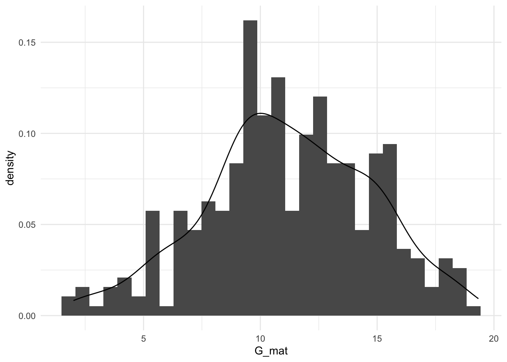
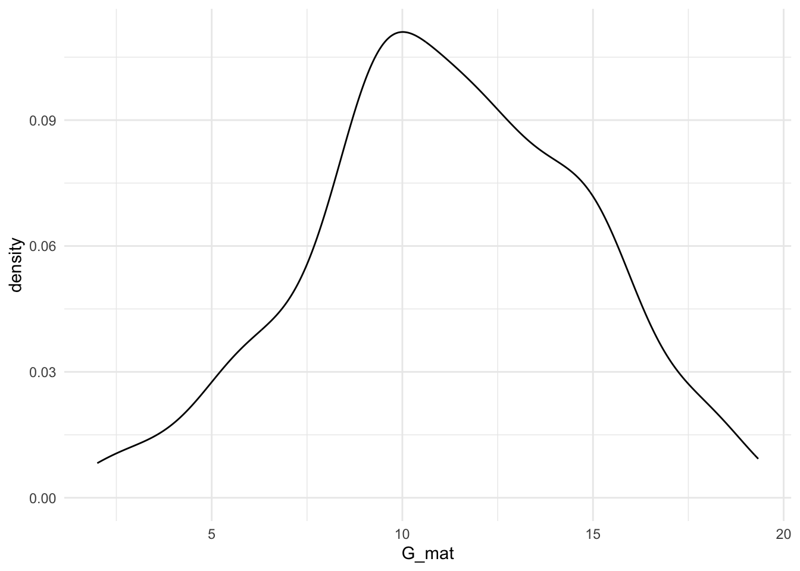
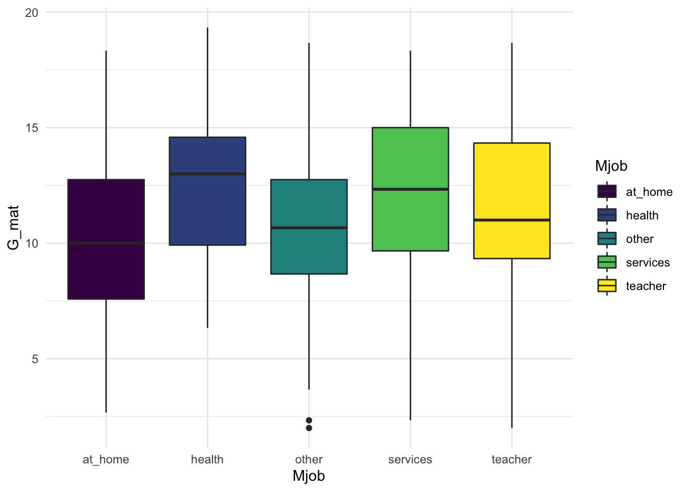

5 Распределения
Что такое распределение? Мы постоянно употребляем это слово.
Говоря о распределениях, мы имеем в виду закон распределения случайной величины – соответствие между возможными значениями этой величины из области ее допустимых значений и: вероятностями этих значений – для дискретной величины, либо плотностью вероятности – для непрерывной величины.
Законы распределений вероятностей можно вывести совсем не для всех величин! Но так сложилось, что некоторые закономерности, распределения вероятностей мы можем описать формулами, как в физике: сила тяжести (сила, с которой Земля притягивает все теля) прямо пропорциональная массе объекта, взятая с коэффициентом ускорения свободного падения \(F = m*g\). Мы это заметили относительно окружающего мира и вывели закон (не лично мы, а вообще представители планеты Земля). Точно так же и с распределниями: мы заметили, что вероятности распределения некоторых случайных величин подчиняются определенным законам, и записали их. Например, доказано, что непрерывные случайные величины, на которые действует множество случайных факторов (например, рост, вес и тд), распределяются в соответствии с распределением Гаусса, оно же – нормальное распределение. Его формула:
\(P(x) = \frac{e^{-(x - \mu)^{2}/(2\sigma^{2}) }} {\sigma\sqrt{2\pi}}\)

Или, например, экспоненциальное распределение:
\(P(x)= \lambda \times e^{-\lambda x}\)
 χ2-распределение:
χ2-распределение:
\(P(x)= \lambda \times e^{-\lambda x}\)

Или, например, биномиальное распределение:
\(P(k | n, p) = \frac{n!}{k!(n-k)!} \times p^k \times (1-p)^{n-k} = {n \choose k} \times p^k \times (1-p)^{n-k}\)
 Посмотреть и ужаснуться можно тут http://www.math.wm.edu/~leemis/chart/UDR/UDR.html. Нам, к счастью, ничего из этого не понадобится.
Менее пугающая версия https://www.johndcook.com/blog/distribution_chart/#normal
На примере данных про выгорание:
| teacher_number | age | exp_years | exp_scaled | burnout_MBI | univer |
|---|---|---|---|---|---|
| 1 | 51 | 2 | от 1 до 2 | 61 | MSU |
| 2 | 50 | 5 | от 3 до 5 | 50 | HSE |
| 3 | 57 | 7 | больше 5 | 55 | MSU |
| 4 | 43 | 4 | от 3 до 5 | 42 | RANEPA |
| 5 | 35 | 8 | больше 5 | 41 | HSE |
| 6 | 54 | 8 | больше 5 | 60 | RANEPA |
| 7 | 29 | 3 | от 3 до 5 | 43 | MSU |
| 8 | 28 | 2 | от 1 до 2 | 48 | HSE |
| 9 | 45 | 1 | от 1 до 2 | 59 | MSU |
| 10 | 37 | 6 | больше 5 | 30 | RANEPA |
| 11 | 32 | 6 | больше 5 | 70 | HSE |
| 12 | 31 | 3 | от 3 до 5 | 38 | RANEPA |
| 13 | 26 | 5 | от 3 до 5 | 38 | MSU |
| 14 | 22 | 2 | от 1 до 2 | 41 | HSE |
| 15 | 47 | 6 | больше 5 | 61 | MSU |
| 16 | 36 | 5 | от 3 до 5 | 68 | RANEPA |
| 17 | 34 | 3 | от 3 до 5 | 41 | HSE |
| 18 | 42 | 1 | от 1 до 2 | 45 | RANEPA |
| 19 | 33 | 2 | от 1 до 2 | 30 | MSU |
| 20 | 46 | 6 | больше 5 | 31 | HSE |
| 21 | 44 | 3 | от 3 до 5 | 53 | MSU |
| 22 | 29 | 4 | от 3 до 5 | 24 | RANEPA |
| 23 | 54 | 2 | от 1 до 2 | 44 | HSE |
| 24 | 28 | 7 | больше 5 | 70 | RANEPA |
| 25 | 50 | 2 | от 1 до 2 | 55 | MSU |
| 26 | 54 | 3 | от 3 до 5 | 19 | HSE |
| 27 | 39 | 1 | от 1 до 2 | 50 | MSU |
| 28 | 39 | 4 | от 3 до 5 | 32 | RANEPA |
| 29 | 29 | 3 | от 3 до 5 | 45 | HSE |
| 30 | 51 | 7 | больше 5 | 57 | RANEPA |


5.1 Функции распределения
Выше мы познакомились с плотностью вероятностью, зафиксируем все применимые к вероятности функции, которые бывают полезны:
- функция плотности вероятности (probability density function) для непрерывных СВ (например, рост, вес) и функция вероятности (probability mass function) для дискретных СВ (например, количество заболевших) – самая простая базовая функция, часто обозначается буквой
d* - функция накопленной вероятности / плотности вероятности (cumulative distribution function) для непреревных СВ, часто обозначается буквой
p* - квантильная функция (quantile function), она же обратная функция накопленной плотности распределения, об этом попозже, часто обозначается буквой
q*Функция плотности вероятности (cumulative distribution function; cdf)
Зачем они нужны?
Разберемся на примере тестов на IQ.
Функция плотности вероятности (probability density function)
Функция накопленной плотности (cumulative distribution function; cdf)